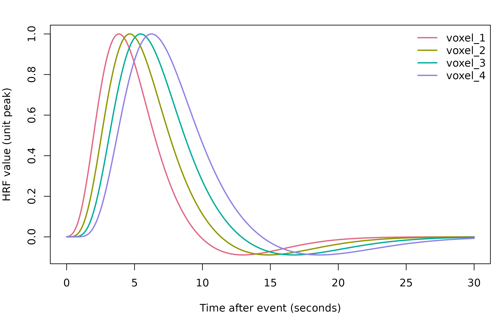
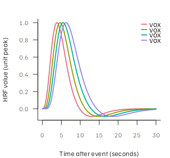
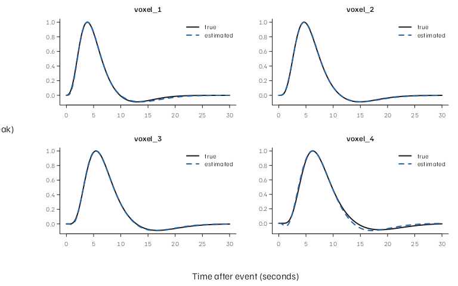
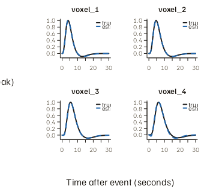

Voxel-wise HRF shapes and trial coefficients
Source:vignettes/voxel-wise-hrf.Rmd
voxel-wise-hrf.Rmdestimate_voxel_hrf() estimates one HRF shape per voxel;
lss_with_hrf() then uses those shapes to estimate one LSS
coefficient per trial and voxel. Because each shape is normalized to a
peak of one, the coefficient for a unit-amplitude impulse event is the
trial’s peak-response amplitude. Read this after
vignette("fmrilss"), vignette("oasis_method"),
and vignette("lss_with_fmridesign").
Fix the HRF scale before interpreting a beta
HRF shape and response amplitude are not jointly identified without a
scale convention: multiplying an HRF by
and dividing its beta by
leaves the fitted signal unchanged. estimate_voxel_hrf()
and lss_with_hrf() resolve that ambiguity with the
conventions in this table.
| Object | Meaning | Units |
|---|---|---|
| VoxelHRF coefficients | oriented HRF-shape weights normalized to a positive peak of one | unit-peak shape weights |
| VoxelHRF amplitude_scale | scale removed from the pooled calibration fit | calibration-response scale |
| lss_with_hrf() beta; unit-amplitude impulse | trial response on the unit-peak HRF scale | peak-response amplitude |
| lss_with_hrf() beta; nonzero duration or non-unit amplitude | coefficient on the supplied duration- and amplitude-coded event design | event-design coefficient |
amplitude_scale lets you reconstruct the raw pooled-fit
coefficients, but it is not a trial beta. With unit-amplitude impulses,
the trial beta from lss_with_hrf() can be read as a peak
response because the HRF shape it receives has a positive peak of
one.
Shapes are oriented to correlate positively with a reference HRF
(ref_hrf, the canonical HRF by default). Some voxels cannot
be meaningfully peak-normalized: those whose oriented shape has no
positive peak, or a positive peak smaller than 5% of its largest
absolute deflection. Such a voxel typically has no signal, and dividing
by a noise-level peak would inflate its betas arbitrarily.
estimate_voxel_hrf() instead scales it by its largest
absolute response, flags it in degenerate, and counts it in
a warning; the rest of the fit is unaffected.
lss_with_hrf() carries the flags as a
degenerate attribute, because those voxels’ betas are not
in peak-response units. lss_rank1() follows the same
policy.
Separate shape calibration from trial estimation
Estimating a shape and trial betas from the same response is adaptive and can make an in-sample comparison optimistic. This example uses independent calibration and analysis responses with the same scan timing. This separates shape estimation from trial estimation in a controlled example; it does not establish performance across participants or acquisitions.
set.seed(20260822)
n_time <- 240L
n_voxels <- 4L
TR <- 1.2
sframe <- sampling_frame(blocklens = n_time, TR = TR)
end_time <- max(samples(sframe, global = TRUE))
calibration_events <- data.frame(
onset = seq(10, end_time - 35, length.out = 24),
duration = 0,
condition = "calibration"
)
analysis_events <- data.frame(
onset = seq(12, end_time - 35, length.out = 16),
duration = 0,
condition = "analysis"
)Simulate latency and width differences
Stretching an HRF’s time axis (dilation) changes its width;
multiplying it by a scalar does not. The helper below evaluates the
canonical HRF at (time - delay) / dilation, then
renormalizes the resulting waveform to unit peak. Dilation therefore
changes the response’s width without changing the amplitude being
estimated.
make_unit_peak_hrf <- function(delay, dilation) {
dense_time <- seq(0, 30, by = 0.01)
peak <- max(HRF_SPMG1((dense_time - delay) / dilation))
HRF(
fun = function(time) HRF_SPMG1((time - delay) / dilation) / peak,
name = sprintf("delay_%s_width_%s", delay, dilation),
span = 30,
nbasis = 1L
)
}
delays <- c(-0.4, -0.1, 0.2, 0.5)
dilations <- c(0.85, 0.95, 1.05, 1.15)
true_hrfs <- Map(make_unit_peak_hrf, delays, dilations)
voxel_names <- paste0("voxel_", seq_len(n_voxels))| Voxel | Delay_seconds | Dilation | Peak_height | Peak_time_seconds | FWHM_seconds |
|---|---|---|---|---|---|
| voxel_1 | -0.4 | 0.85 | 1 | 3.85 | 4.45 |
| voxel_2 | -0.1 | 0.95 | 1 | 4.65 | 4.95 |
| voxel_3 | 0.2 | 1.05 | 1 | 5.45 | 5.50 |
| voxel_4 | 0.5 | 1.15 | 1 | 6.25 | 6.00 |


The four simulated HRFs all peak at one, while later voxels have later and wider responses.
Generate calibration and analysis responses
The calibration events all have amplitude one, so the pooled-shape model is correctly specified. Analysis amplitudes are 2, 3, 4, and 5 across voxels and constant across trials. Constant amplitudes keep every LSS model (the target trial plus one regressor for all other trials) correctly specified, and values well above one test whether amplitudes far from one are recovered.
trial_design <- function(events, hrf, sframe) {
regressors <- regressor_set(
onsets = events$onset,
fac = factor(seq_len(nrow(events))),
hrf = hrf,
duration = events$duration,
span = 30,
summate = FALSE
)
as.matrix(evaluate(
regressors,
grid = samples(sframe, global = TRUE),
precision = 0.1,
method = "conv"
))
}
fixed_regs <- cbind(trend = seq(-1, 1, length.out = n_time))
nuisance_regs <- cbind(
sine = sin(seq_len(n_time) / 13),
cosine = cos(seq_len(n_time) / 17)
)
common_design <- cbind(Intercept = 1, fixed_regs, nuisance_regs)
calibration_response <- common_design %*%
matrix(rnorm(ncol(common_design) * n_voxels, sd = 0.2),
ncol(common_design), n_voxels)
for (voxel in seq_len(n_voxels)) {
calibration_response[, voxel] <- calibration_response[, voxel] +
rowSums(trial_design(calibration_events, true_hrfs[[voxel]], sframe))
}
calibration_response <- calibration_response +
matrix(rnorm(n_time * n_voxels, sd = 0.02), n_time, n_voxels)
colnames(calibration_response) <- voxel_names
true_amplitude <- c(2, 3, 4, 5)
analysis_response <- common_design %*%
matrix(rnorm(ncol(common_design) * n_voxels, sd = 0.2),
ncol(common_design), n_voxels)
true_trial_designs <- vector("list", n_voxels)
for (voxel in seq_len(n_voxels)) {
true_trial_designs[[voxel]] <- trial_design(
analysis_events, true_hrfs[[voxel]], sframe
)
analysis_response[, voxel] <- analysis_response[, voxel] +
rowSums(true_trial_designs[[voxel]]) * true_amplitude[voxel]
}
analysis_response <- analysis_response +
matrix(rnorm(n_time * n_voxels, sd = 0.02), n_time, n_voxels)
colnames(analysis_response) <- voxel_namesEstimate normalized voxel HRFs
The estimator takes onsets and durations in seconds plus an explicit
sampling frame. HRF_SPMG3 supplies canonical,
temporal-derivative, and dispersion-derivative basis functions; the
returned weights define a reconstructed curve, not three directly
interpretable physiological measurements.
The basis must also cover the whole response. fmrilss evaluates a
basis only over its declared span, and fmrihrf’s built-in
HRF_SPMG1 and HRF_SPMG3 declare a 24-second
span, so their post-stimulus undershoot is truncated at 24 seconds. A
truncated basis cannot represent the late undershoot, and the missing
tail biases trial amplitudes, most for the widest responses. The
simulated responses here last 30 seconds, so the analysis rebuilds the
same bases with a 30-second span.
spmg3_30 <- gen_hrf(HRF_SPMG3, span = 30)
spmg1_30 <- gen_hrf(HRF_SPMG1, span = 30)
c(builtin_span = attr(HRF_SPMG3, "span"), analysis_span = attr(spmg3_30, "span"))
#> builtin_span analysis_span
#> 24 30
estimated_hrf <- estimate_voxel_hrf(
calibration_response,
calibration_events,
basis = spmg3_30,
nuisance_regs = nuisance_regs,
fixed_regs = fixed_regs,
sframe = sframe
)
relabeled_events <- calibration_events
relabeled_events$condition <- rep(c("A", "B"), length.out = nrow(relabeled_events))
relabeled_hrf <- estimate_voxel_hrf(
calibration_response,
relabeled_events,
basis = spmg3_30,
nuisance_regs = nuisance_regs,
fixed_regs = fixed_regs,
sframe = sframe
)
relabeling_error <- max(abs(
relabeled_hrf$coefficients - estimated_hrf$coefficients
))
c(
class = class(estimated_hrf),
coefficient_shape = paste(dim(estimated_hrf$coefficients), collapse = " x "),
normalization = estimated_hrf$normalization,
condition_pooling = estimated_hrf$condition_pooling,
condition_relabeling_error = format(relabeling_error, scientific = TRUE)
)
#> class coefficient_shape
#> "VoxelHRF" "3 x 4"
#> normalization condition_pooling
#> "positive-peak" "all-events"
#> condition_relabeling_error
#> "0e+00"The estimator pools all supplied events into one shape per voxel. Condition labels are retained as metadata but do not request condition-specific HRFs; changing those labels leaves the estimates unchanged in the check above.
Inspect reconstructed shapes
| Voxel | Correlation | Peak_time_error_seconds | FWHM_error_seconds |
|---|---|---|---|
| voxel_1 | 1.000 | 0.05 | -0.05 |
| voxel_2 | 1.000 | 0.05 | 0.00 |
| voxel_3 | 1.000 | -0.05 | 0.00 |
| voxel_4 | 0.998 | 0.00 | 0.10 |


Estimated SPMG3 curves closely follow the independently generated unit-peak HRFs.
Estimate trial amplitudes with lss_with_hrf()
fit_r <- lss_with_hrf(
analysis_response,
analysis_events,
estimated_hrf,
nuisance_regs = nuisance_regs,
fixed_regs = fixed_regs,
sframe = sframe,
engine = "R",
verbose = FALSE
)
fit_cpp <- lss_with_hrf(
analysis_response,
analysis_events,
estimated_hrf,
nuisance_regs = nuisance_regs,
fixed_regs = fixed_regs,
sframe = sframe,
engine = "C++",
chunk_size = 2,
verbose = FALSE
)
dense_cpp <- as.matrix(fit_cpp)With engine = "R", lss_with_hrf() returns a
dense matrix. With engine = "C++", it returns an
LSSBeta object backed by bigmemory;
as.matrix() is the documented way to extract a dense matrix
from it. Both results record the engine actually used, so if the
function falls back to a different backend, the output shows it.
engine_contract <- data.frame(
Requested = c(attr(fit_r, "engine_requested"), fit_cpp$engine_requested),
Used = c(attr(fit_r, "engine_used"), fit_cpp$engine_used),
Returned_class = c(paste(class(fit_r), collapse = "/"), class(fit_cpp)[1]),
Shape = c(paste(dim(fit_r), collapse = " x "),
paste(dim(dense_cpp), collapse = " x ")),
Units = c(attr(fit_r, "units"), attr(dense_cpp, "units"))
)
knitr::kable(
engine_contract,
row.names = FALSE,
align = c("l", "l", "l", "l", "l"),
caption = "Return types, realized engines, dimensions, and coefficient units."
)| Requested | Used | Returned_class | Shape | Units |
|---|---|---|---|---|
| R | r | matrix/array | 16 x 4 | peak-response amplitude |
| C++ | cpp_arma | LSSBeta | 16 x 4 | peak-response amplitude |
Compare estimators on the same amplitude scale
The reference below fits every trial and voxel with the known unit-peak HRF, the same fixed regressors, and the same nuisance span. A canonical comparator also uses a unit-peak HRF. All rows therefore target peak-response amplitude; the comparison keeps HRF scale consistent across methods.
| Estimator | RMSE_to_true_amplitude | RMSE_to_known_HRF_oracle |
|---|---|---|
| known unit-peak HRF oracle | 0.0120 | 0.0000 |
| estimated unit-peak voxel HRF | 0.1565 | 0.1554 |
| unit-peak canonical HRF | 0.4283 | 0.4271 |
| Voxel | True_amplitude | Mean_estimated_amplitude | Mean_error |
|---|---|---|---|
| voxel_1 | 2 | 2.0154 | 0.0154 |
| voxel_2 | 3 | 3.0108 | 0.0108 |
| voxel_3 | 4 | 3.9370 | -0.0630 |
| voxel_4 | 5 | 4.6972 | -0.3028 |
In this deliberately constructed four-voxel example, the estimated-shape fit is closer to truth than the canonical fit. Its largest error is in voxel_4 (mean error -0.303). One possible contributor is basis mismatch: the three SPMG3 functions need not exactly reproduce a time-dilated HRF, including its undershoot, and remaining shape errors can affect estimates when responses overlap. This example does not isolate that contribution from calibration error. A high shape correlation alone does not guarantee unbiased amplitudes. Performance also depends on calibration quality, event timing, noise, and nuisance modeling.
Check other TRs and run boundaries
The same public pipeline also runs at non-unit TR. The table below repeats a correctly specified one-basis coefficient experiment at TR 0.8 and 2 seconds, including nonzero durations, with true coefficients 2 and 4. These rows are event-design coefficients rather than peak responses. The check also compares R with chunked C++ output.
| TR_seconds | RMSE_to_truth | Maximum_engine_difference | Mean_coefficient_2 | Mean_coefficient_4 |
|---|---|---|---|---|
| 0.8 | 0 | 0 | 2 | 4 |
| 2.0 | 0 | 0 | 2 | 4 |
For multiple runs, add a run column of exact integer run
indices and give each event’s onset relative to the start of its run.
The trial design is built separately within each run, so an HRF tail
cannot leak across a run boundary. The table below checks this for two
runs of unequal length.
| Check | Maximum_absolute_design_value |
|---|---|
| run-1 event inside run 2 | 0 |
| run-2 event inside run 1 | 0 |
Assumptions and limitations
-
conditionlabels are metadata in this API. All supplied events estimate one pooled HRF shape per voxel. Fit separate calibration subsets only when distinct condition-specific shapes are scientifically justified. - The calibration model assumes one pooled event amplitude per voxel. Strongly heterogeneous calibration amplitudes can distort the estimated shape.
- The returned trial betas are point estimates conditional on the estimated HRF shapes. They do not include shape uncertainty or provide standard errors and -tests. These helpers also do not implement estimated prewhitening.
- Pass the same scientifically required fixed and nuisance spans to shape estimation and trial fitting. The functions add run intercepts when they are absent. If that complete common span contains the pooled HRF basis, shape is not identifiable and estimation fails explicitly.
- Run-aware convolution prevents an HRF tail from crossing a run boundary, but in a joint LSS fit the aggregate other-trials regressor still sums trials from all runs. When the estimand must be run-local, fit runs separately, then map each trial back to its original event.
- Event onsets and durations are finite times in seconds. Empty event tables, out-of-run onsets, malformed run indices, non-finite coefficients, and incomplete or duplicated voxel names fail explicitly.
- The main example uses unit-amplitude impulses, for which the
coefficient is a peak response. With a nonzero duration or non-unit
events$amplitude, the result is a coefficient on the supplied event design;units,event_duration, andevent_amplituderecord that change. For a zero-duration event, multiplying by event amplitude recovers the modeled peak. For a nonzero duration, evaluate the duration-coded regressor when a peak conversion is needed. A zero-amplitude trial is not identifiable and fails explicitly. - OASIS with a multi-basis HRF returns coefficients per trial. Those coefficients are not interchangeable with the scalar peak-response amplitudes above; retain the full basis result unless you define and verify a separate shape-to-amplitude reduction.
Next step
vignette("rank1_hrf") estimates each voxel’s HRF jointly
with the trial amplitudes (the rank-1 GLM of Pedregosa et al., 2015)
instead of from one pooled amplitude, which matters when conditions
differ in their mean response. vignette("sbhm") presents a
library-constrained alternative for estimating voxel-specific shapes,
score margins (how far the best library shape scores above the
runner-up), and trial event-design coefficients.